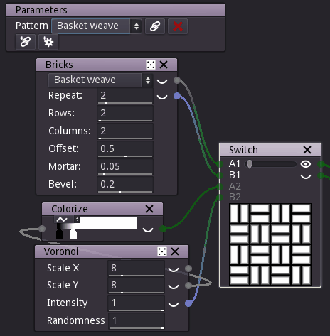

Remote nodes¶
Remote nodes have no input or output. They are only used to control (remotely) the parameters of other nodes. They can be used to either gather important parameters of a complex graph or define the parameters of a subgraph node.
Creating a remote node¶
Remote nodes can be created by dragging a Miscellaneous/Remote node from the library panel to a graph panel.
Configuring a remote node¶
Remote nodes provide two kinds of controls:
linked widgets, that are associated to parameters in the graph and whose values are copied into the target parameters
configuration widgets, that can be used to define named configurations of the target parameters
Linked widgets¶
Linked widgets can be used to modify at the same time several parameters from several nodes.
When hovering a linked widget, the user interface will show which parameters it controls.

To create a linked widget, click on the  button and select a parameter
to be controlled in another node. This will create a new linked widget whose type is the
same as the selected parameter.
button and select a parameter
to be controlled in another node. This will create a new linked widget whose type is the
same as the selected parameter.
More parameters can be controlled by the same linked widget. To add one, click on the
 button of the linked widget, and select the parameter. While
associating parameters to linked widgets, Material Maker will check compatibility.
button of the linked widget, and select the parameter. While
associating parameters to linked widgets, Material Maker will check compatibility.
To delete a linked widget, click on its  button.
button.
Configuration widgets¶
Configuration widgets are used to create named configurations for associated parameters in the graph.
To create a configuration widget, click on the  button
and select a parameter to be controlled in another node. Then, link all other parameters
that should be controlled using the button.
button
and select a parameter to be controlled in another node. Then, link all other parameters
that should be controlled using the button.
When all parameters are linked, you can create your first configuration. Set the values of all parameters for this first configuration, then select the add configuration option in the configuration’s drop down button. you will be propted for a name for the new configuration.
Repeat the same operation (set all parameters values, then add configuration) to add all other configurations.
Selecting a configuration using the drop down button will recall the associated parameters values.
It is also possible to rename, update or delete a configuration using the drop down button.